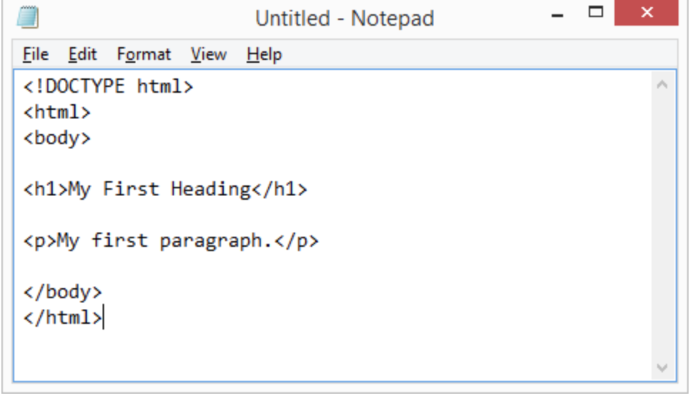

How to Set Up a HTML Development Environment
Getting started with HTML is the best idea for those who are new to programming. As tough as it can seem it is
the programming language that requires the least amount of prior knowledge. In this guide, we will show you what you need to do set up a
program to allow you to get on the path to coding. Whether it be a future occupation or a hobby. It is worth noting, we will only be going over
two methods for installing a development environment. There are many ways to skin a cat, and these are two of those ways.
For any operating system, setting up VS Code is not that complicated. The nice thing about
setting up a program like VS Code is that once you do it you will not have to do it again (Unless you wipe your machine).
Setting up HTML Development Method 1(Manual Loading)
Step One - Download Visual Studio Code

The main thing we need for writing our code is an Integrated Development Environment,
and while there are lots out there ranging from extremely simple to incredibly powerful,
we're going to use Visual Studio Code as it has a nice feature set, and is pretty simple to use.
Just click the Visual Studio Code logo on the right to get access to the download page! The manual loding method involves loading the HTML file manually
and refreshing each time you make changes to your HTML in VS code following steps below:
Step Two - Open Visual Studio Code

Step Three - Create an HTML File

Step Four - Save your newly created HTML File

Step Five - Download the Visual Studio Code HTML:5 extension and use it to bring up the HTML template

Step Six - Open the saved HTML file, right-click on it and click on the Open In Browser option

Step Seven - The HTML file will load in your browser

Step Eight - Try to edit your HTML file in VS code and save it
Step Nine - Go to your browser and refresh to see your edits
Setting up HTML Development Method 2(Auto Loading)
Step One - Download Visual Studio Code
The main thing we need for writing our code is an Integrated Development Environment,
and while there are lots out there ranging from extremely simple to incredibly powerful,
we're going to use Visual Studio Code as it has a nice feature set, and is pretty simple to use.
Just click the Visual Studio Code logo on the right to get access to the download page! The manual loding method involves loading the HTML file manually
and refreshing each time you make changes to your HTML in VS code following steps below:
Step Two - Open Visual Studio Code
Step Three - Search the Visual Studio Code Live Server extension and install it

Step Four - Create an HTML file in VS Code and save it

Step Five - Right-click on the HTML file in VS Code and click Open Live Server. Alternatively use the shortcut “Ctrl+Alt+P”

Step Six - VS Code will automatically run the HTML file in your browser
Step Seven - Make edits to your HTML code and Save
Step Eight - You will notice that your browser instantly refreshes and reflects the changes you made. This is a helpful to way to run HTML code in VS Code as it shows you your potential mistakes immediately.
Citation for these methods and tutorial videos: Foskaay, Solomon. “How to Run HTML Code in Visual Studio Code [+Example Codes].” DProgramming University, 26 Sept. 2021.
Their website here!
Notepad App
You can use the Notepad App that is either on your Windows or Mac desktop.
